home
exhibitions
info
lwc
she had a way of jumping
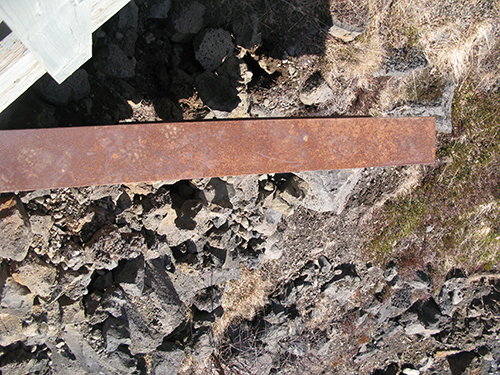 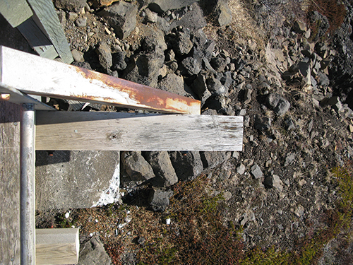 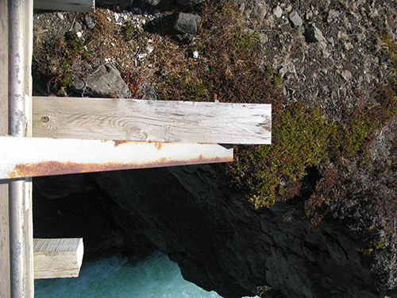 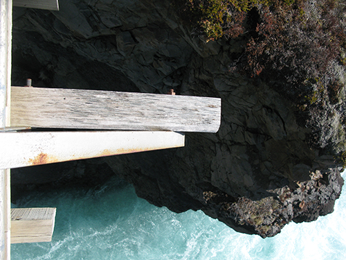 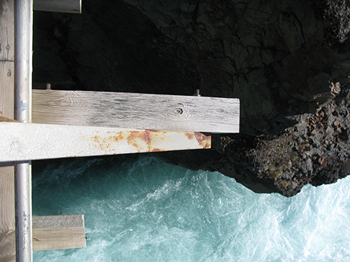 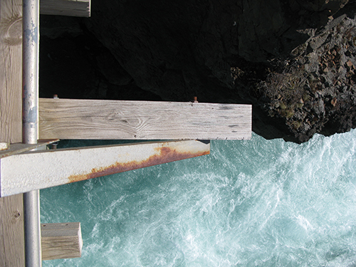 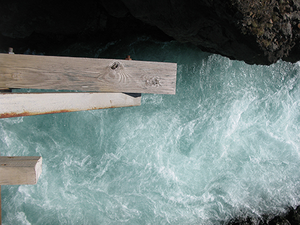 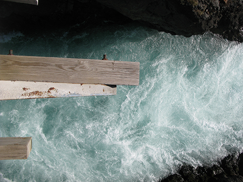 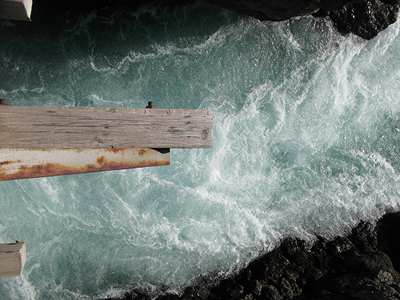 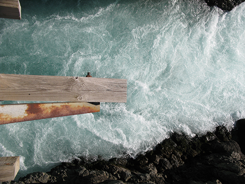 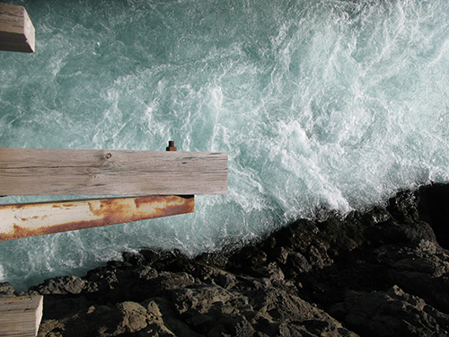 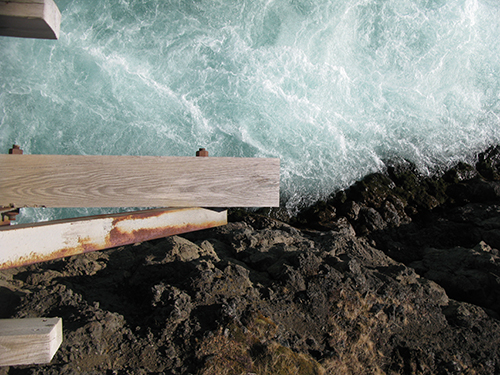 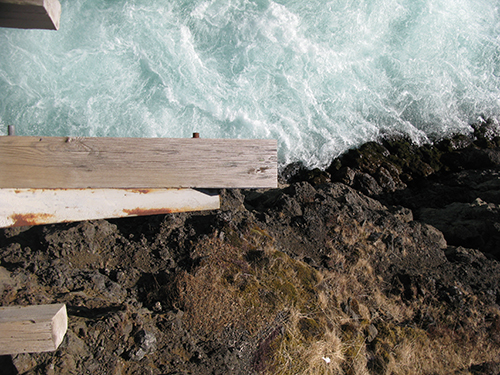 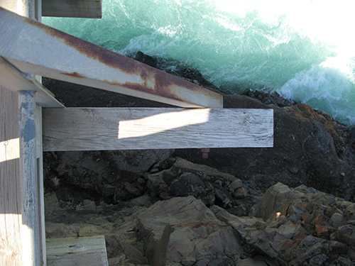
hug roux law
self-in-site
ode action
YYY
nothing
m.i/nfo
//
2015
//
Spontaneous Combustion Festival, Hug Roux Law, Bussy Building, London
//
Felt Acts, Heckle, Bosse & Baum, London
//
2014
//
WPAC open, 38 Hoe Street, London
//
Vanishing Entities, Lime Wharf, London
//
Hello Ape Eyes, Brunel Tunnel, London
//
Liebe RA, MKII, London
//
Ode Action (#2 Helene Smith) Guerrilla Studio, London
//
7th ICCCA COAL ESSENCE Iron Forming Art, Ritual and Landscape, Pedvale Museum, Latvia
//
Heteroglossia, Central Saint Martins, London
//
Materialising Site, Lethaby Gallery, London
//
Nourishment, Anatums Abode, London
//
Live Your Dreams, Crypt Gallery, London
//
Pilgrim Age, Vorspiel Club, Transmediale Festival, Berlin
//
2013
//
Navigate Performance Party, The Glass Factory, London
//
Action Ode (#1 Claude Debussy) The Levitated, London
//
Found, Royal Academy of Arts, London
//
Tomorrow I'll be Elsewhere, A-Side B-Side Gallery, London
//
M.S.G (Madness, Sanity & Gentrification) London
//
Responsive Spaces, The Parasol Unit, London
//
Intermission: An Audio Portrait of Place, Lisbon Architecture Triennale
//
MAYDAY, ]performance s p a c e [, London
//
Susan So Lazy, Cafe OTO Project Space, London
//
Corps Exquis, Battersea Arts Center, London
//
Edge of the Land, Hundred Years Gallery, London
//
Sounding Space, The Sound Portal, London
//
InTransit, V22, London
//
2012
//
OpenHouse, MOMA PS1
//
Nothing will come of nothing. Speak Again. A chance conversation between John Cage and Antonin Artaud. The Situation Room, London
//
Pussy Riot Je t Aime, Le Baron, Paris
//
Awards & Funding
//
Jane Rapley Scholarship
//
UAL Patron Bursary
//
Innovation Award
//
Residencies
//
Fljotstunga, Iceland
//
Anatums Abode, London
//
MOMA PS1, NYC, USA
//